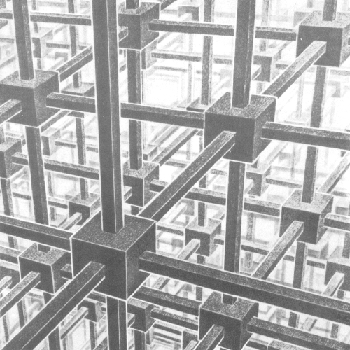

Mathematics 7710. Optimization and
homogenization
Fall and spring semesters, 1998-1999
JWB 333, T/TH, 12:25-1:45.
Course description
The course discusses homogenization and structural optimization.
These topics are closely connected: both are dealing with PDE with fast variable
coefficients. The focus of the course is the optimization of properties of
inhomogeneous bodies by varying their structures.
I. We start with the theory of homogenization which will be taught from
the book by Bensoussan, Lions, and Papanicolaou, plus from recent research
papers.

Fishes (by Esher) |
=>
|

Homogenized Fishes |
The homogenization is the natural procedure to describe processes in complicated
structures with known microstructures. It allows to replace a highly
inhomogeneous
medium with an equivalent homogeneous material,
to estimate the norm of fluctuations of fields, etc.
We also formulate the central problem of structural optimization
about "the best" geometrical composition of the structure.
|
|
Homogenization reduces the original problem to a problem which is doable, and
this simplified problem reflects most of important features of the original one.
The coefficients of homogenized equations significantly depend on the
structure. If the structure is unknown , we can only determine the bounds of the coefficients, that are
independent of the structure.
|
| 
|
II. The optimization of structures naturally follows the previous topic.
We give an introduction to the optimization theory, optimal control, necessary
conditions, minimizing sequences.
Then several
structural optimization
problems are discussed, such as the maximization of the stiffness of a
structure, a game between the load and the
structure,
structures of optimal composites . Finally,
we will discuss "suboptimal" projects that are much simpler than the truly
optimal ones, and possess almost the same cost.
Applications include: structural optimization of electro-conducting and
mechanical constructions, phase equilibrium and phase transition, the
biological systems, which are both structured and rational.
|
During the class, we cover several hot topics and techniques of the modern
applied math. Specifically:
- Homogenization of elliptic, parabolic, and hyperbolic operators.
Effective properties, bounds.
- Convexity and non-linear programming. Control theory. Maximum principle.
- Control of PDE systems: optimization of coefficients (material
properties) and optimization of sources (loadings).
- Examples of structural optimization, phase equilibrium, bio-materials.
To the top
Requisite.
The course is addressed to graduate students in math, science, and
engineering.
Several topics for course projects will be suggested. Most welcome are the
students own projects.
Text for I semester:
- A. Cherkaev. Variational Methods for Structural Optimization. Springer,
2000.
- Notes
The reference books:
- A. Bensoussan, J.-L.Lions, G. Papanicolaou. Asymptotic Analyssis for
Periodic Structures. North Holland, 1978.
- V.V.Jikov, S.M.Kozlov, O.A.Olejnik. Homogenization of differential
operators and integral functionals Springer, 1991
- K. Lurie. Applied Optimal Control. Plenum 1993
- M.Bendsoe. Optimization of structural topology, shape, and materials.
Springer, 1995
Papers:
- Kohn, Strang. Optimal design and relaxation of variational problems.
Comm.Pure Appl.Math. 39, (1986) Parts I - III.
- Calculus of variations and homogenization by F. Murat and L. Tartar.
In: Topics in mathematical modelling of composite materials
Andrej Cherkaev and Robert Kohn editors, Birkhauser, 1997
-
K.A. Lurie and A. V. Cherkaev. Effective characteristics of composite materials
and the optimal design of structural elements. In: Topics in mathematical
modelling of composite materials
Andrej Cherkaev and Robert Kohn editors, Birkhauser, 1997
-
To the top
Plan
|
I semester
|
Introduction:
Homogenization in studying and control of complex systems.
Part 1. Problems with one independent variable.
One dimensional homogenization.
- Canonical form, averaging.
- Examples. effective conductivity, speed of sound,
etc.
Introduction to optimal control
- Control theory: variables, controls, functionals. Examples.
- Canonical form and Pontriagin's maximum principle.
- Chattering control and averaging.
- Dynamical programming.
|
Part 2. Homogenization and control in PDE.
Homogenization of elliptic PDE
- Equation of second order.
- Homogenization by multi-scale expansions. Effective
properties.
- Bounds for effective properties.
- Elasticity equations. Homogenization.
- Non-linear problems.
Control of systems described by elliptic PDE.
- Examples of optimal control:
variable domain, variable load, variable properties.
- Necessary conditions of Weierstrass type.
- Chattering regimes and homogenization.
Homogenization of parabolic and hyperbolic equations.
- Problems
- Stochastic averaging
- Waves and dissipation
|
|
II semester
|
Part 3. Quasiconvexity, Bounds, G-closure
Quasiconvexity.
- Definitions
- Translation method
- Minimizing sequences
- Minimal extensions.
Bounds.
- Bounds on conducting constants
- Bounds on elastic constants
- Some other bounds
|
Part 4. Structural Optimization .
Variational problems
- Optimization of stiffness (conductivity)
- Optimization of eigenfrequencies
Various optimization problems.
- Optimization of single-loaded system by arbitrary criterium
- Min-max problems of optimization: load versus structure
- Optimization and bio-materials. What the nature wants?
|
To the top
Notes (will be posted)
To Andrej Cherkaev
homepage